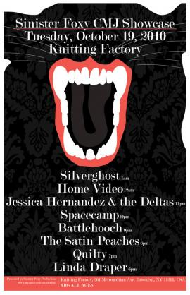

Linda Draper To Perform @ CMJ Tue. Oct. 19 @ Knitting Factory, 6 PM! Free Special CD's for the first 20 People!
picture:

Hi!
I am so incredibly stoked to be sharing this news with you: I will be performing in CMJ on Tue. Oct. 19 at 6 PM!!!
This will be part of the SINISTER FOXY Showcase at KNITTING FACTORY (361 Metropolitan Ave., Brooklyn, NY 11211)
And...I'll be joined by Scott Fragala on Bass and Eric Puente on Drums!
Here's a sneak peek of a couple songs we will be performing:
SLEEPWALKERS - Performed at WEBSTER HALL in July 2010 (Eric Puente on drums, Scott Fragala on Bass)
TIME WILL TELL (but on Tue. it will be with a band!) This was recorded at Knitting Factory back when it was still on Leonard St. in NYC - I think I fumbled and recovered (and laughed?) in one place in this song, can you even tell? It was pretty subtle...
Also scheduled to perform: (7 pm) Quilty (8pm) Satin Peaches (9pm) Battlehooch (10pm) Spacecamp (11pm) Jessica Hernandez and the Deltas (12 am) Home Video (1 am) Silverghost
There is a $10 cover. I will be giving away a special compilation CD called "No Frills" to the first 20 people who would like it. This CD is a special collection of songs taken from my early years of recording, specifically, my first 3 albums (produced by Kramer - Ricochet, Snow White Trash Girl and Patchwork recorded in 2000-2003), which are now out of print.
I will also have available (but for purchase) my more recent 3 albums (One Two Three Four, Keepsake and Bridge & Tunnel) which thankfully, still are in print. I really hope you can make it! If you can't, please feel free to send a reprenstative (or 2) in your place.
Thank you!
Linda Draper
- Linda Draper's blog
- Login or register to post comments
Comments
Thanks! Who else is playing CMJ that I should check out???
Fun show. Yeah, Quilty was awesome! And I learned from Sarah that the Knitting Factory in Brooklyn used to be Luna Lounge!?! I couldn't believe it. We agreed the space is much better utilized now and the sound there is pretty great.
Battlehooch were amazing too!! Very cool band from San Francisco. (I couldn't stick around later than that, I started to get tired - I had to wake up for a work related function, this morning at 6 a.m. 'Twas a LOOONG day.
Anyhooo....I have a badge to check out other CMJ related shows for free. I don't know where to begin. Any recommendations??? Who else out there is playing CMJ that I should check out? Please, inform & enlighten me because I'm out of touch.
Thanks Linda!
I've kind of been out of the CMJ loop for the past couple of years. If you see any more cool bands you should let us know. Maybe you can be the OJ CMJ news correspondent? ; )
"Here to do great things."
MBT Scarpe
come in www.scarpembtshoes.com, enjoy Scarpe MBT with free shipping and fast home delivery in MBT Shoes online store, walking with MBT Scarpe every day, you will become more and more health, if you have knee and hip problems, we strongly recommend MBT Chapa Men Shoes to you, it can relief of Muscular Tension, Joint Problems, Back Problems, Leg & Feet Problems, hurry up, save more in MBT Shoes Online!
Christian Louboutin
www.louboutinlondon.com are a large online store to provide Christian Louboutin in our online store with great discount, hurry to have a look, extensive selection of super-fashion Christian Louboutin UK with different colors, we strongly recommend Christian Louboutin Pumps to you, which are hot on sale in our online store, we gurantee you the high quality but the lowest price, make you become the foucus of the crowd.
MBT Shoes UK
www.mbtukmbt.com is a professhional online store to provide MBT Shoes with free shipping and non taxes in MBT UK market, MBT Shoes UK can lessen the pain that you feel from these issues. Because you will be putting less stress and strain on these joints, you will be able to strengthen these areas, we strongly recommend MBT Chapa Men Shoes, which are hot on sale in our online store, hurry to have a look please, you won't depressed with our online store.
Spacecamp and Quilty also 2
Spacecamp and Quilty also 2 other very nice bands.
"Here to do great things."